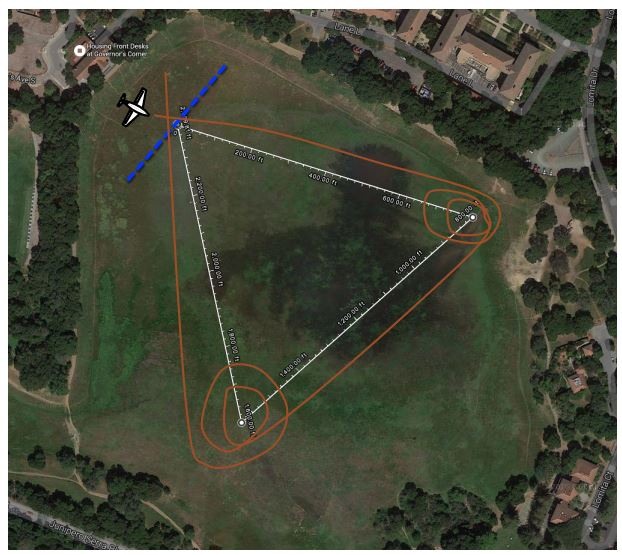
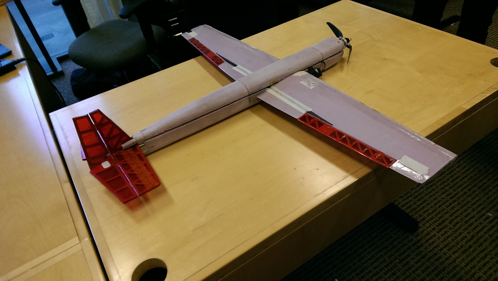
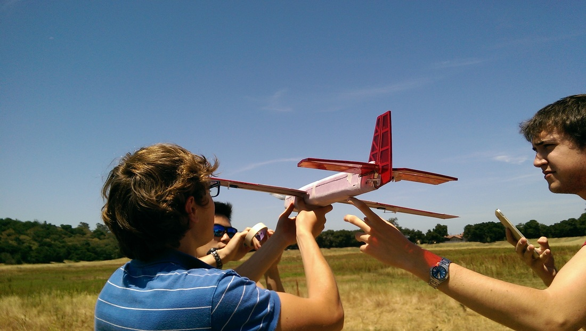
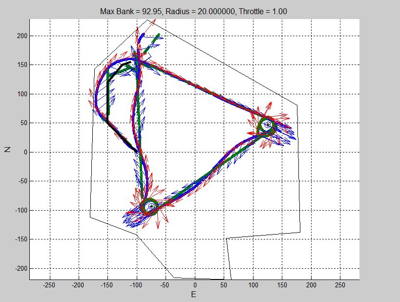

Aircraft Design of Autonomous Aircraft
March 2016 - June 2016
Overview
This was a quarter long class in which I designed, constructed, and flew the fixed wing unamnned aerial vehicle as a team of 7. The project goals are different each year, and for this year, it was to complete a certain path in the shortest time (i.e. Drone Race!). The team as a whole designs the airframe, choose an airfoil, sizes the components, conducts test flights, implements control law, and flies it as fast as possible. The picture of race path is shown below.
Race Path and Rules
|  |
| Picture of Race Path |
|---|
Rules
1.UAV needs to complete 840 degrees turn at each (virtual) pylon
2.When turning around the pilon, UAV must stay 5m from the pylon.
3.UAV must stay within a certain altitude envelope. (20m-40m or 40m-60m)
My Role
In this project, I was mainly involved in the flight controls engineering though I worked on designing of the airplane and estimation of performance as well. The class used the Pixhawk for the autopilot which originally has all the necessary code to fly the UAV. However, for academic purpose, the course staff modified the code and let us implement our own control law and flight algorithms. I was responsible for implementing the control law and tuning its gains. In addition to the contorl law implementation, I also implemented the flight algorithm that tells the aircraft how to follow the race path.
Strategy
Through the flight tests, we learned that if we can turn well, we can fly very fast. Initially, we were overshooting because the velocity was too high. However, if we enter the circle with very low speed, we experienced a significant loss of the altitude. In order to solve this issue, we decided to control the altitude by rudder and adjustment of bank angle. Usually, the rudder is used to control yaw in a level flight. However, when the UAV is turning, the rudder acts as the "elevator". We decided to implement the control law based on this strategy.
Our UAV
|  |  |
Outcome
We won the first place!! The finishing time was 55.7 Seconds.
| Our Flight path |
|---|
|  |